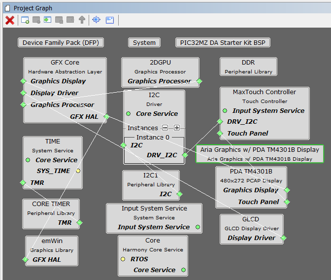

This is a simple graphics application with basic building blocks – a widget, an image and some text, which demonstrates the use of the third-party SEGGER emWin Graphics Library being used inside the MPLAB Harmony framework.
The application uses the SEGGER emWin graphics library to render graphics to the display. This library replaces the Aria graphics library, but continues to use display and touch interface APIs provided by the Aria hal library.
- Third Party SEGGER emWin graphics library
- Input system service and touch driver
- Time system service, timer-counter peripheral library and driver
- Low-Cost Controller-less (LCC) display driver
- 16-bit RGB565 color depth support (65535 unique colors)
- EBI peripheral library and driver
- I2C driver

The parent directory for this application is gfx/apps/emwin_quickstart. To build this application, open the gfx/apps/emwin_quickstart/firmware/emwin_qs_mzef_sk_meb2_tm4301b.X project file.
The following table lists configuration properties:
|
Project Name |
BSP Used |
Graphics Template Used |
Description |
|
emwin_qs_mzef_sk_meb2_tm4301b.X |
PIC32MZ EF Starter Kit |
Aria Graphics w/ PDA TM4301B Display |
PIC32MZ EF Starter Kit with MEBII and 4.3” WQVGA PCAP Touch display |
- This configuration requires that the J9 jumper be set to enable internal SRAM for the frame buffer. Set the J9 jumper to connect the EBIOE and LCD_PCLK pins. The J9 jumper is located on the bottom of the MEB II board, beneath where the starter kit is plugged into the board. Refer to the following figure for the exact location.
- Connect the PIC32MZ EF Starter Kit board to the MEB II board
- Power up the board by connecting the power adapter to J3 power connector on the MEB II board or a powered USB cable to the USB DEBUG port on the Starter Kit board

The demonstration consists of three screens created using the SEGGER emWin GUIBuilder utility:
- Home
- Number Churning
- Text Alignment
Home Screen

Demonstration Process
- Touch the Next button to navigate from the Home screen to the Number Churning screen. The Number Churning screen uses the following widgets:
- Framewin: Number Churning
- Slider: Single Slider with 10 divisions. The Slider position is updated by both touch input and spinbox.
- Spinbox : Three-digit spinbox with value updated by both arrow buttons and slider
- Button: Previous and Next
- Text: Move the slider or press up/down arrow button to change the number
Number Churning

- Touch the Next button to navigate from Number Churning Screen to Text Alignment screen. Similarly, press the Previous button to navigate from Number Churning Screen back to the Home screen. The Text Alignment screen consists of the following widgets:
- Framewin: Text Alignment
- Radio: Six radio buttons with each radio button affecting the alignment of the Alignment text
- Text: Horizontal Alignment, Vertical Alignment, center, left, top, right, bottom, and Change text alignment by pressing the radio button
Text Alignment

- Touch the Previous button to navigate from Text Alignment screen back to the Number Churning screen.
|
MPLAB® Harmony Graphics Suite
|